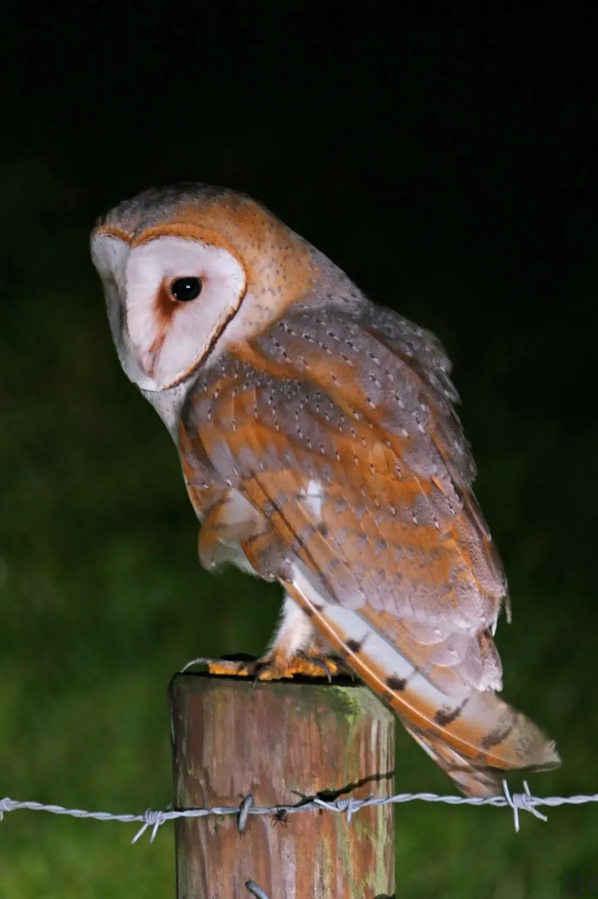
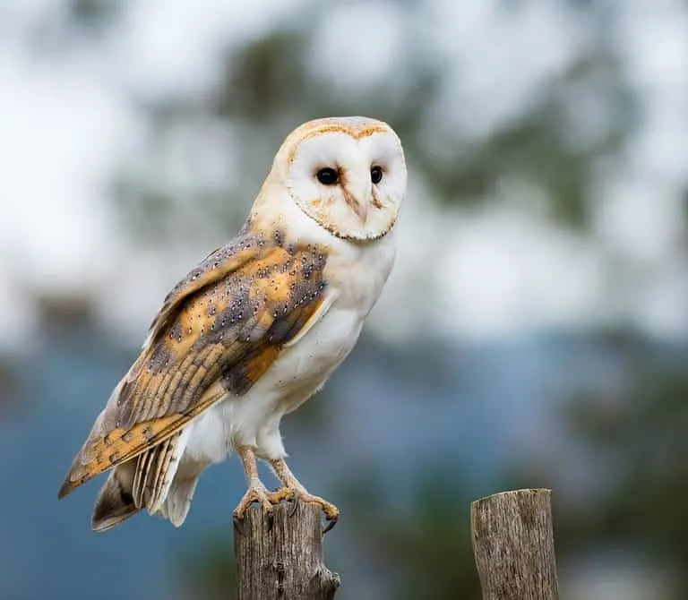

Tyto alba
da família TytonidaeA Tyto alba, conhecida como coruja-das-torres, é uma das espécies de corujas mais amplamente distribuídas no mundo, encontrada em todos os continentes, exceto na Antártica. Esta ave de rapina pertence à família Tytonidae e é conhecida por sua aparência distinta e hábitos noturnos.
O rosto em forma de coração, com olhos negros e grandes discos faciais, é uma característica marcante.
A dieta da Tyto alba é composta principalmente por pequenos mamíferos, como roedores, mas também inclui insetos, aves e outros pequenos vertebrados. Sua habilidade de caça é aprimorada por sua audição excepcional, que permite localizar presas no escuro com precisão. As corujas-das-torres são predadoras eficientes e desempenham um papel importante no controle de populações de roedores.
Em termos de habitat, a coruja-das-torres prefere áreas abertas, como campos, pastagens e áreas agrícolas, mas também pode ser encontrada em florestas e áreas urbanas. Elas nidificam em cavidades de árvores, edifícios abandonados e celeiros, o que lhes valeu o nome comum em inglês, "barn owl".
"Se o bater das asas de uma borboleta causa o caos, com certeza o abrir dos olhos de uma coruja restaura a paz."
Roney Santos Rodrigues
- Estado de Conservação: Estável
- Ordem: Strigiformes
- Família: Tytonidae
- Gênero: Tyto
- Idade média: 10 anos
- Macho: 0,52 kg
- Fêmea: 0,70 kg
A reprodução ocorre uma ou duas vezes por ano, dependendo da disponibilidade de alimento. A fêmea põe de 4 a 7 ovos, que são incubados por cerca de 30 dias. Os filhotes são alimentados pelos pais e deixam o ninho após aproximadamente 8 a 10 semanas.
Culturalmente, a coruja-das-torres tem sido associada a mitos e superstições em várias culturas. Em algumas tradições, é vista como um presságio de morte, enquanto em outras é reverenciada como um símbolo de sabedoria e proteção.
A Tyto alba tem uma expectativa de vida de cerca de 10 anos na natureza, embora indivíduos em cativeiro possam viver até 25 anos. Sua longevidade e adaptabilidade contribuem para seu sucesso em uma variedade de ambientes.
Em resumo, o Desmodus rotundus é uma espécie fascinante tanto por suas adaptações únicas para a alimentação hematófaga quanto por seu comportamento social complexo. Embora seja visto como uma praga em algumas regiões, seu estudo oferece insights valiosos para a ciência e a medicina.